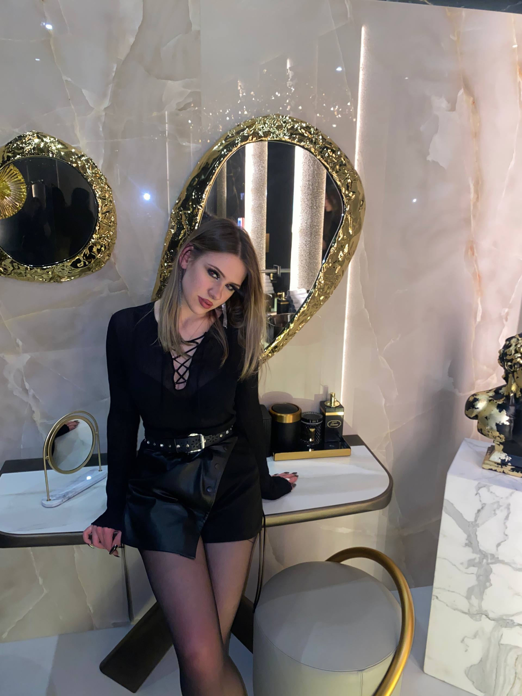
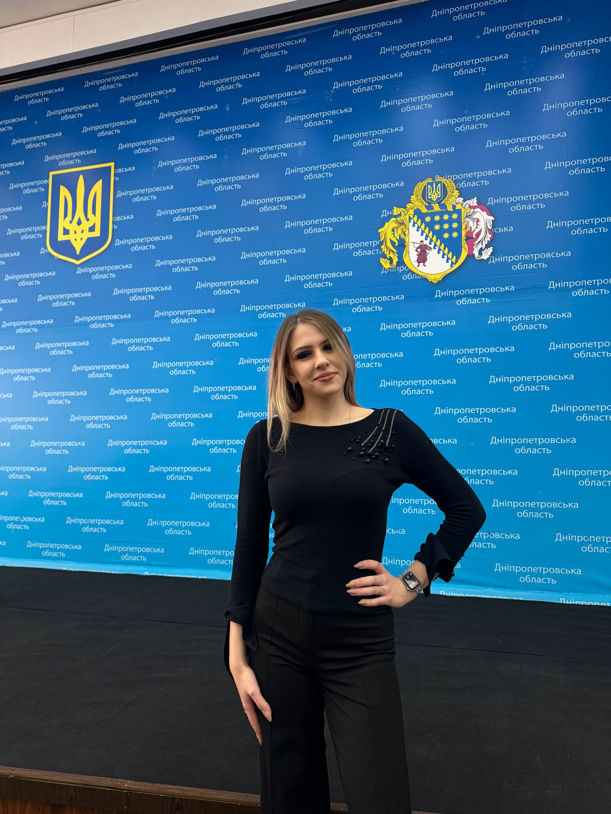

«Медицина, лідерство та великі мрії»
Привіт! Я — Ірина Гуменюк
Студентка випускного курсу Дніпровського базового фахового медичного коледжу. Багаторічна очільниця студентського самоврядування, активна спікерка та ведуча коледжних і міських подій, ініціаторка волонтерських зборів і майбутній відданий медичний фахівець.
Світлини & Моменти з життя
Медична практика, коледжні заходи та теплі спогади
Медична практика 🩺
ДБФМК • Клінічні протоколи

Офіційні заходи 🎤
Спікерка • Молодіжні форуми
Рідне місто Дніпро 🌅
Теплі вечори & Натхнення
Стиль & Затишок ✨
Енергія та нові плани
Освіта & Студентське Самоврядування
Медичний фах, студентське лідерство та щоденна відповідальність
Дніпровський базовий фаховий медичний коледж
КЗВО «ДБФМК» ДОР
Опанування сучасних клінічних дисциплін, фармакології та практичних протоколів допомоги.
Клінічна практика у відділеннях провідних лікарень міста Дніпро.
Сумлінне ставлення до навчання, участь у науково-практичних семінарах та круглих столах.
Голова студентського самоврядування
Очільниця студентської ради коледжу
Захист прав та інтересів студентів, тісна комунікація з адміністрацією коледжу.
Організація благодійних ярмарків, донорських днів та зборів на підтримку ЗСУ.
Координація студентських ініціатив, святкових концертів та випускних церемоній.
Заслуги, Заходи та Виступи
Особисті відзнаки, публічні виступи та активна діяльність
Очільниця студентської ради коледжу
Переобрана лідеркою студентського парламенту на кілька термінів. Керування секторами, організація масштабних заходів та представлення студентів перед дирекцією.
Ведуча урочистих і фахових подій
Постійна ведуча Дня медичного працівника, урочистих лінійок ДБФМК, днів відкритих дверей та круглих столів з охорони здоров'я.
Благодійні ініціативи та донорство
Організація зборів коштів на медикаменти та спорядження для ЗСУ, координація днів донорства крові серед студентів і допомога шпиталям Дніпра.
Участь у молодіжних форумах міста
Представництво студентської спільноти медиків на міських молодіжних з'їздах, панельних дискусіях та заходах з розвитку громадянського суспільства.
Подяки за громадську діяльність
Отримання грамот і подяк від керівництва коледжу та молодіжних організацій за особистий внесок у розвиток студентського самоврядування.
Місце для нової перемоги
Тут буде додано наступну конференцію, диплом чи нову ініціативу Ірини
Далі буде... ✨Контактна інформація
Відкрита до співпраці, волонтерських ініціатив та спілкування
Для дзвінків
Номер телефону
+380 (95) 531-86-58
Telegram
Месенджери
@irinagymenyuk
Електронна пошта
irinagumenyuk882@gmail.com
Місто навчання
Локація
м. Дніпро, Україна
Надіслати записку для Ірини ✉️
Текст сформується автоматично — вам залишиться лише натиснути «Надіслати»